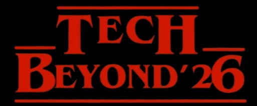

VELAMMAL ENGINEERING COLLEGE
An Autonomous Institution, Affiliated to Anna University
Department of Information Technology
Proudly Presents

ENTER THE UPSIDE DOWN OF TECHNOLOGY
About the Symposium
TECH BEYOND '26 is a Stranger Things–themed technical symposium where innovation meets the Upside Down. Dive into coding, gaming, AI, and futuristic tech in a retro 80s supernatural atmosphere.